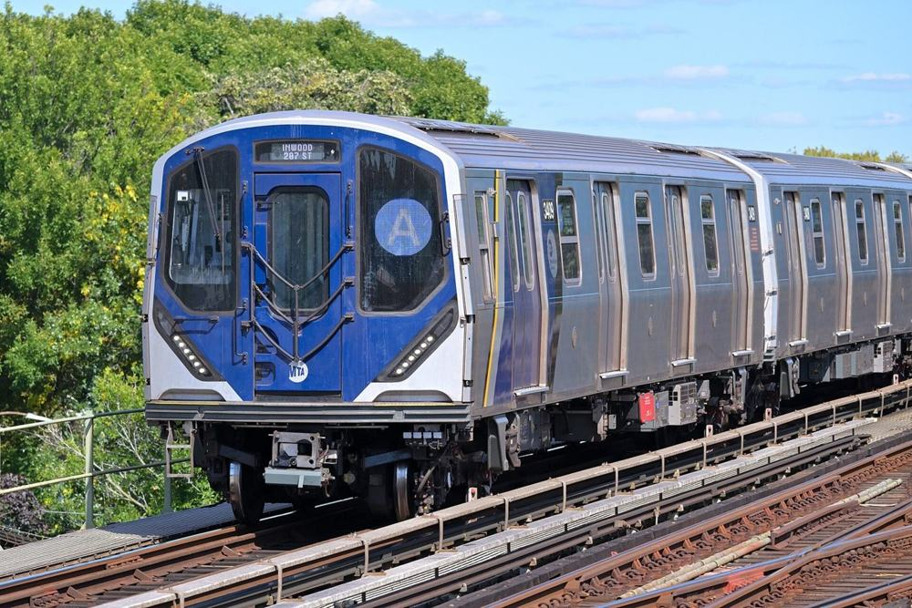
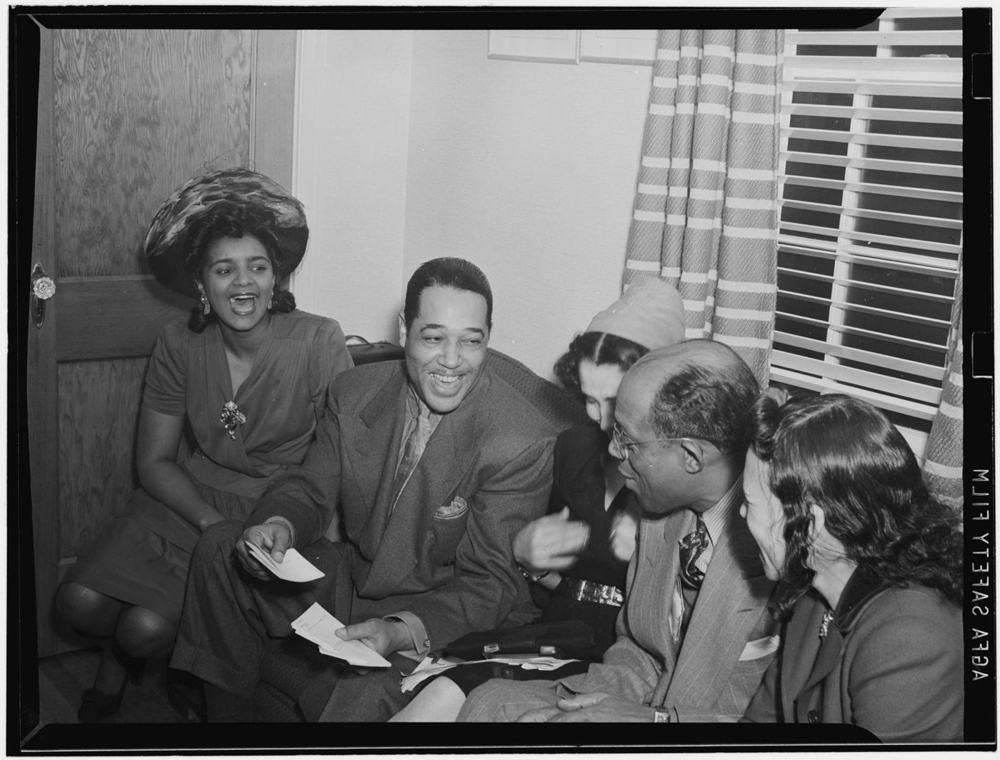

故事
一首爵士名曲，其實是一段搭地鐵的說明。1938 年，年輕的 Billy Strayhorn 第一次見到 Duke Ellington。Ellington 很欣賞他，給了他路費，叫他來紐約找自己。
還寫下去哈林區的搭車方法：搭 A 線。Strayhorn 就用這句話，寫成了一首曲子。1941 年，電台和版權組織鬧翻，很多舊曲不能在廣播裡播。

樂團急需新曲，Take the A Train 被拿出來，成了主題曲。它後來成了 Ellington 樂團最有名的招牌曲。收藏起來，下次在紐約搭 A 線，想想這首歌。
故事後面
Billy Strayhorn 一九三八年在匹茲堡見到 Duke Ellington，Ellington 很欣賞他，請他到紐約找自己，還寫下去哈林區要搭 A 線。
一九四一年，電台和版權組織發生糾紛，很多舊曲不能在廣播播出。樂團急需新曲，Take the A Train 被拿出來，成了主題曲。
Strayhorn 和 Ellington 合作將近三十年，很多作品很難分清楚是誰寫的。

這樣聽
聽開頭那幾個上升的音，像列車鳴笛，接著整團一起開動。
逐句英文
A jazz classic is really a set of subway directions.
In 1938, young Billy Strayhorn met Duke Ellington for the first time.
Ellington was impressed, gave him travel money and told him to come to New York.
He also wrote down how to get to Harlem: take the A train.
Strayhorn turned those words into a tune.
In 1941, a dispute between radio and a licensing body kept many older songs off the air.
Needing new material, the band brought out Take the A Train, and it became their theme.
It went on to become the Ellington band's best-known signature.
Save this. Next time you ride the A train in New York, think of this song.
查證筆記與出處
初次見面年份：維基百科寫一九三八年十二月（匹茲堡），派工包的「一九三九」已改。版權組織是 ASCAP，稿裡沒點名。
https://en.wikipedia.org/wiki/Take_the_%22A%22_Train
https://en.wikipedia.org/wiki/Billy_Strayhorn
https://en.wikipedia.org/wiki/1941_ASCAP_boycott
一分鐘影片版在 Instagram @jazz101tw。